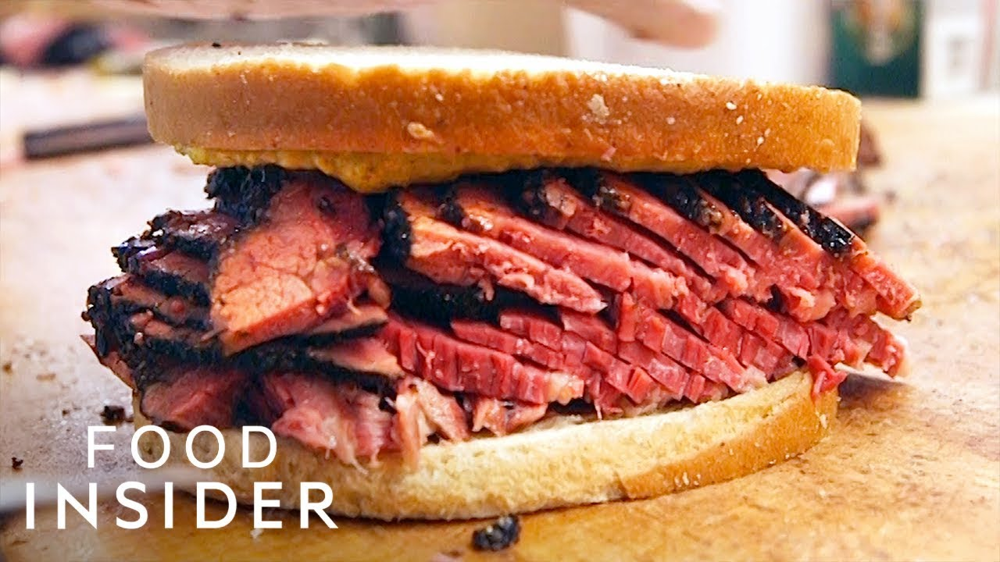
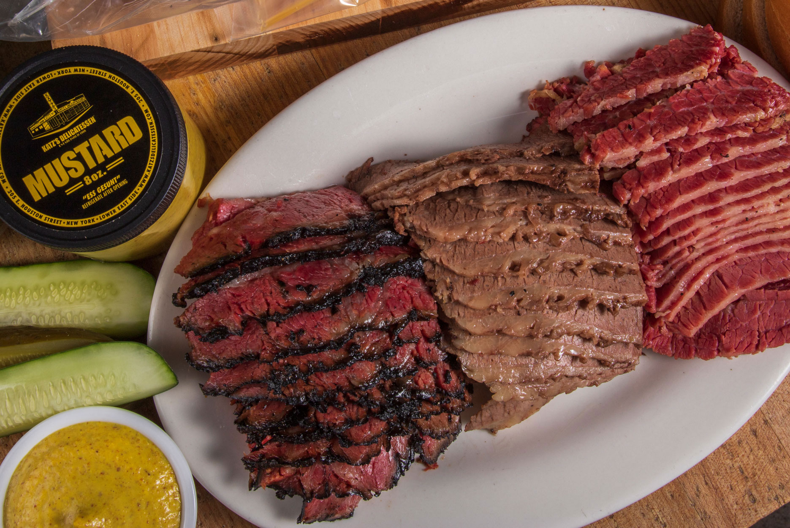

|  |  |
Katz's Delicatessen, also known as Katz's of New York City, is a kosher-style delicatessen located at 205 East Houston Street, on the southwest corner of Houston and Ludlow Streets on the Lower East Side in Manhattan, New York City.
Since its founding, it has been popular among locals and tourists alike for its pastrami on rye, which is considered among New York's best.
Each week, Katz's serves 15,000 lb (6,800 kg) of pastrami, 8,000 lb (3,600 kg) of corned beef, 2,000 lb (910 kg) of salami and 4,000 hot dogs. In 2016, Zagat gave Katz's a food rating of 4.5 out of 5, and ranked it as the number one deli in New York City.
Moovit is really useful to get travel around USA.
The Moovit app combines information from public transit operators and authorities with live information from the user community to offer travelers a real-time picture, including the best route for their journey.